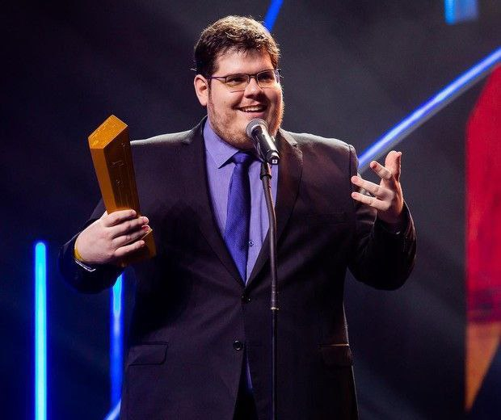
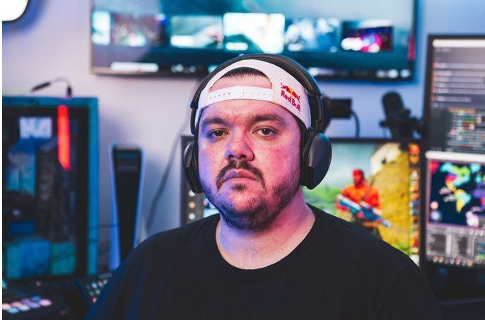
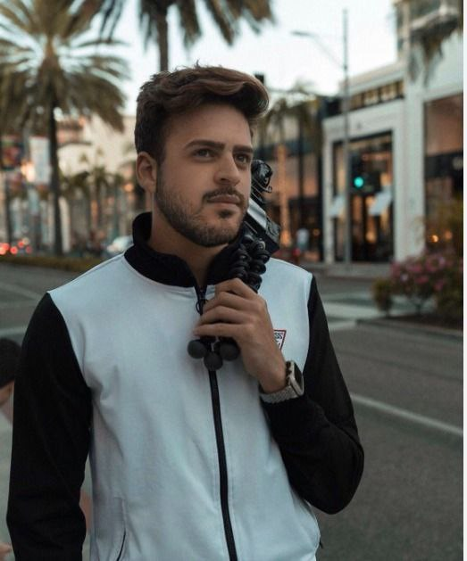
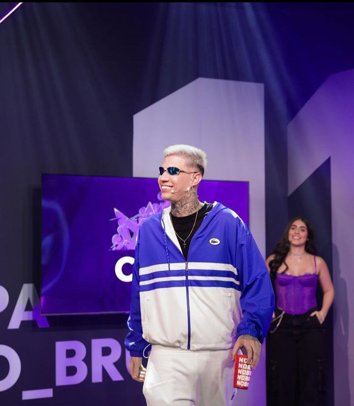

Loud Coringa, cujo nome verdadeiro é Victor Augusto, é um dos maiores e mais influentes streamers e criadores de conteúdo do Brasil. Conhecido por seu carisma, habilidade nos jogos e presença marcante nas redes sociais, Coringa se estabeleceu como uma figura central na organização Loud e no cenário de eSports e entretenimento digital brasileiro.
Início da Carreira
Victor Augusto começou sua trajetória no mundo dos games ainda na adolescência, desenvolvendo uma paixão por jogos eletrônicos que eventualmente o levou a explorar o cenário competitivo e de criação de conteúdo. Antes de se tornar conhecido como Loud Coringa, ele já se destacava por suas habilidades em diversos jogos, especialmente em Free Fire, um dos títulos mais populares no Brasil.Ascensão com a Loud
A grande virada na carreira de Victor ocorreu com sua entrada na Loud, uma organização de eSports e criação de conteúdo fundada em 2019 por Bruno "PlayHard" Bittencourt e Jean Ortega. A Loud rapidamente se tornou uma das principais organizações no cenário de Free Fire e outros jogos, e Coringa foi um dos primeiros membros a se juntar à equipe.Popularidade e Conteúdo
Como Loud Coringa, Victor se destacou não apenas por suas habilidades nos jogos, mas também por seu carisma e capacidade de entreter seu público. Ele se tornou um dos streamers mais populares da Loud, acumulando milhões de seguidores em plataformas como YouTube, Twitch e Instagram. Suas transmissões ao vivo, vídeos de gameplay e vlogs diários são extremamente populares, atraindo uma grande audiência. Coringa é conhecido por seu estilo descontraído e divertido, frequentemente interagindo com seus seguidores durante as transmissões e criando um ambiente acolhedor e engajador. Além de Free Fire, ele joga e transmite uma variedade de outros jogos, o que ajuda a manter seu conteúdo diversificado e interessante.Impacto e Influência
Como uma das principais figuras da Loud, Coringa tem uma influência significativa na comunidade de gamers e criadores de conteúdo do Brasil. Ele é visto como um modelo para muitos jovens jogadores que aspiram a entrar no cenário competitivo ou se tornar criadores de conteúdo. Sua trajetória de sucesso é inspiradora, mostrando que é possível transformar a paixão por jogos em uma carreira lucrativa e reconhecida. Além disso, Coringa tem sido um embaixador positivo para o gaming no Brasil, ajudando a elevar o perfil dos eSports e a trazer mais visibilidade para a comunidade de jogadores brasileiros.Vida Pessoal e Futuro
Apesar de sua grande popularidade, Victor Augusto mantém uma abordagem equilibrada entre sua vida pública e privada. Ele compartilha momentos de sua vida pessoal com seus seguidores, mas sempre mantém uma separação saudável entre seu trabalho e sua vida fora das câmeras. Com a contínua expansão da Loud e a crescente popularidade dos jogos online e dos eSports, o futuro de Loud Coringa parece brilhante. Ele continua a crescer como streamer e figura influente no cenário dos jogos, sempre buscando novas formas de entreter e engajar seu público.Legado
Loud Coringa é uma figura central no mundo dos eSports e do entretenimento digital no Brasil, e seu impacto na comunidade de gamers é profundo e duradouro. Seu carisma, habilidade e dedicação o tornaram um dos maiores nomes do streaming no Brasil, e ele continua a inspirar e influenciar uma nova geração de jogadores e criadores de conteúdo..Principais categorias:
Grand Theft Auto V
Valorant
Conter Strike (CS-GO)
Só na conversa
Casimito, cujo nome verdadeiro é Casimiro Miguel Vieira da Silva Ferreira, nasceu no dia 10 de outubro de 1993, no Rio de Janeiro, Brasil. Ele é um dos mais populares e carismáticos streamers do Brasil, conhecido por suas transmissões ao vivo e reações a conteúdos diversos, além de seu vasto conhecimento e paixão pelo futebol.
Início da Carreira
Casimiro começou sua trajetória no mundo dos esportes e do entretenimento esportivo como jornalista esportivo. Ele ganhou experiência trabalhando em diversas funções relacionadas ao futebol, inclusive como comentarista e apresentador. Sua capacidade de analisar jogos e eventos esportivos com profundidade e bom humor logo chamou a atenção do público.Ascensão no Streaming
A grande virada na carreira de Casimiro veio com sua entrada no mundo do streaming. Ele começou a transmitir ao vivo na plataforma Twitch, onde rapidamente conquistou uma base de seguidores leais. Casimiro se destacou por suas reações autênticas e hilárias a vídeos variados, bem como por seu conteúdo relacionado a esportes, especialmente futebol. Seu estilo descontraído e acessível, combinado com uma personalidade carismática e senso de humor único, fez com que ele se tornasse um dos streamers mais queridos do Brasil. Além de Twitch, Casimiro também faz sucesso no YouTube, onde seus vídeos e clipes de transmissões ao vivo acumulam milhões de visualizações.Conteúdo Diversificado
O conteúdo de Casimiro é bastante diversificado, abrangendo desde reações a vídeos virais, análises de jogos de futebol, até conversas informais com seus espectadores. Ele também realiza entrevistas e colaborações com outras personalidades conhecidas, ampliando ainda mais seu alcance e influência.Impacto e Influência
Casimiro é amplamente reconhecido por seu impacto na comunidade de streaming e esportes no Brasil. Sua abordagem autêntica e divertida conquistou uma vasta audiência, e ele se tornou uma figura influente entre os jovens brasileiros. Seu trabalho ajudou a popularizar ainda mais o streaming no Brasil e a aproximar os fãs de futebol do mundo dos jogos e do entretenimento digital.Vida Pessoal e Futuro
Casimiro mantém uma abordagem equilibrada em relação à sua vida pessoal e pública. Ele compartilha aspectos de sua vida cotidiana com seus seguidores, mas sempre mantém uma separação saudável entre sua carreira e sua vida privada. Com sua popularidade em constante crescimento e novos projetos no horizonte, o futuro de Casimiro parece brilhante. Ele continua a expandir seu conteúdo e a explorar novas oportunidades no mundo do entretenimento digital.Legado
Casimiro Miguel é uma figura central no mundo do streaming e do entretenimento esportivo no Brasil. Seu carisma, conhecimento e senso de humor o tornaram um dos maiores nomes do streaming no país. Ele continua a inspirar e entreter milhões de pessoas, deixando uma marca duradoura na comunidade de criadores de conteúdo e fãs de esportes.Principais Categorias
Só na conversa
Futebol
Gaules, cujo nome verdadeiro é Alexandre Borba Chiqueta, nasceu em 2 de dezembro de 1983, em São Paulo, Brasil. Ele é um dos mais proeminentes e influentes streamers e criadores de conteúdo do Brasil, conhecido especialmente por suas transmissões de Counter-Strike: Global Offensive (CS ) e por seu impacto significativo na comunidade de eSports.
Início da Carreira
A trajetória de Gaules no mundo dos games começou muito antes de ele se tornar um streamer famoso. Ele iniciou sua carreira como jogador profissional de Counter-Strike na década de 2000. Como jogador, ele alcançou grande sucesso, sendo um dos pioneiros do cenário competitivo de CS no Brasil. Após se aposentar como jogador, Gaules continuou envolvido no cenário de eSports, desta vez como treinador e manager. Ele ajudou a formar e treinar várias equipes de CS, contribuindo para o desenvolvimento do cenário competitivo brasileiro.Superação e Retorno
Apesar do sucesso inicial, Gaules enfrentou sérios desafios pessoais e profissionais, incluindo problemas financeiros e de saúde mental. Em um momento difícil, ele chegou a viver sem condições básicas, mas encontrou forças para se reerguer. Foi durante esse período de recuperação que Gaules decidiu entrar no mundo do streaming. Ele começou a transmitir suas partidas de CS na plataforma Twitch, compartilhando não apenas suas habilidades no jogo, mas também suas experiências de vida e mensagens de superação.Ascensão no Streaming
A autenticidade e resiliência de Gaules rapidamente conquistaram uma base de fãs leais. Suas transmissões se tornaram conhecidas não apenas pelo conteúdo de alta qualidade, mas também pela forte conexão emocional que ele criou com sua comunidade. Gaules se destacou por sua capacidade de engajar e inspirar seus espectadores, muitos dos quais viam nele um exemplo de superação.Conteúdo Diversificado e Impacto
Além de CS, Gaules diversificou seu conteúdo para incluir outros jogos e formatos, como reações a eventos esportivos e interação com a comunidade. Ele também passou a transmitir campeonatos de CS, oferecendo comentários e análises que atraíram uma enorme audiência. Seu impacto na comunidade de eSports brasileira é inegável. Gaules se tornou uma figura central no cenário, ajudando a popularizar os eSports no Brasil e a trazer mais visibilidade e respeito para a profissão de streamer. Ele também é conhecido por suas iniciativas filantrópicas, utilizando sua plataforma para arrecadar fundos e apoiar causas sociais.Vida Pessoal e Futuro
Gaules, apesar de sua grande popularidade, mantém uma abordagem equilibrada em relação à sua vida pessoal. Ele é aberto sobre seus desafios e vitórias, usando sua história para inspirar e ajudar outros. Com a contínua expansão dos eSports e a crescente popularidade do streaming, o futuro de Gaules parece extremamente promissor. Ele continua a inovar e expandir seu conteúdo, sempre buscando novas maneiras de entreter e engajar seu público.Legado
Alexandre "Gaules" Borba é uma das figuras mais influentes do cenário de eSports e streaming no Brasil. Sua história de superação e sucesso, combinada com sua habilidade de conectar e inspirar pessoas, o tornou uma lenda viva na comunidade de gamers. Gaules continua a deixar uma marca duradoura, tanto no cenário de eSports quanto na vida de seus muitos seguidores, solidificando seu legado como um dos maiores streamers do Brasil.Principais categorias:
Conter Strike (CS-GO)
Só na conversa
Alanzoka, cujo nome verdadeiro é Alan Ferreira, nasceu em 13 de maio de 1990, em São Paulo, Brasil. Ele é um dos mais populares e influentes streamers e criadores de conteúdo do Brasil, conhecido por suas transmissões ao vivo de uma grande variedade de jogos, sua personalidade cativante e seu carisma.
Início da Carreira
Alan começou sua carreira no mundo dos games como muitos jovens de sua geração, jogando videogames desde cedo. Ele criou seu canal no YouTube, "alanzoka", em 2011, inicialmente compartilhando vídeos de gameplay de jogos de terror e ação. Seu talento para o entretenimento e sua capacidade de criar conteúdo envolvente rapidamente lhe renderam uma base de fãs dedicada.Ascensão no YouTube
A popularidade de Alanzoka no YouTube cresceu exponencialmente conforme ele diversificava seu conteúdo. Além de jogos de terror, ele começou a explorar uma ampla gama de gêneros, incluindo jogos de aventura, RPG, simulação e muitos outros. Seus vídeos não eram apenas sobre gameplay; Alanzoka se destacava por suas reações autênticas, senso de humor e interação constante com sua audiência.Transição para Twitch
Com o crescimento do streaming ao vivo como forma de entretenimento, Alanzoka fez a transição para a plataforma Twitch, onde continuou a expandir sua influência. Na Twitch, ele encontrou um novo lar para suas transmissões ao vivo, onde podia interagir em tempo real com seus seguidores, criando uma comunidade ainda mais engajada e fiel.Conteúdo Diversificado e Estilo
O que diferencia Alanzoka de muitos outros streamers é a diversidade de seu conteúdo e sua abordagem genuína. Ele joga uma ampla variedade de jogos, desde títulos indie até grandes lançamentos, sempre trazendo seu estilo único para cada transmissão. Sua habilidade de se adaptar a diferentes tipos de jogos e manter o público entretido é uma das chaves de seu sucesso. Alanzoka é conhecido por suas transmissões maratonas, onde passa longas horas jogando e interagindo com seus espectadores. Sua energia contagiante e seu bom humor fazem com que seus seguidores se sintam parte de uma grande família virtual.Impacto e Influência
Alanzoka é uma figura central na comunidade de streaming e games no Brasil. Ele é visto como um pioneiro no setor, ajudando a moldar a forma como o conteúdo de jogos é consumido e apreciado no país. Sua influência se estende além dos jogos; ele é frequentemente convidado para eventos, colaborações e campanhas, aumentando ainda mais sua visibilidade e impacto. Além de seu sucesso no streaming, Alanzoka também é conhecido por sua humildade e acessibilidade. Ele mantém uma forte conexão com seus fãs, sempre demonstrando gratidão e respeito por seu apoio.Vida Pessoal e Futuro
Alan Ferreira mantém um equilíbrio saudável entre sua vida pessoal e sua carreira pública. Ele é relativamente reservado sobre aspectos de sua vida fora das câmeras, preferindo focar no conteúdo e na interação com seus seguidores. Com a contínua popularidade dos jogos e do streaming, o futuro de Alanzoka parece brilhante. Ele continua a inovar e expandir seu conteúdo, sempre buscando novas maneiras de entreter e engajar seu público.Legado
Alanzoka é uma das maiores e mais respeitadas figuras no cenário de streaming e criação de conteúdo de jogos no Brasil. Sua trajetória de sucesso, marcada por dedicação, talento e uma forte conexão com sua audiência, o tornou um ícone no mundo dos games. Ele continua a inspirar uma nova geração de jogadores e criadores de conteúdo, deixando uma marca duradoura na comunidade de games e entretenimento digital no Brasil.Principais categorias:
Todas
Luan Kovarik “Jon Vlogs”, é um criador de conteúdo de jogos/estilo de vida que mora em São Paulo, Brasil. Jon começou a criar conteúdo em 2016, quando morava nos Estados Unidos e mostrava em seus vídeos como era o estilo de vida de um brasileiro na escola america. Desde então, seu único objetivo é mostrar à sua comunidade um mundo que eles não seriam capazes de ver sozinhos. Ele rapidamente fez a transição para se tornar um streamer e um criador de todas as plataformas/formatos. Ele está entre os 5 melhores IRL Twitch Streamer no Brasil e tem uma média de 700 mil visualizações por Stories no Instagram. Seu Tiktok secundário somou 350 milhões de visualizações em 2023.
Principais Categorias:
Conter Strike (Cs-Go)
Valorant
Cassino Virtual
Só na conversa
Yuri Brida, mais conhecido como Yuuri22 pelos seus fãs, é um streamer de 23 anos que começou a fazer lives em 2018/2019 de Free Fire, jogando profissionalmente pela equipe da AS da organização INTZ.
Logo em seguida foi chamado por El_gato para fazer parte de sua organização chamada Los Grandes, onde também foi jogador profissional emulador de Free fire mas com uma nova proposta de ser influenciador e streamer da organização, onde gravou vários vídeos fez lives na plataforma NimoTv sendo um dos maiores da plataforma e ficando cada vez mais famoso, hoje Yuuri conta com números bem altos como 568.6 mil seguidores na Twitch e 1.2 milhões de seguidores em seu instagram. Yuri desabafa em suas redes sociais o seu grande problema com o vício em apostas online.
Yuuri ja teve relacionamento com a influenciadora de Free Fire chamada Rajah, mas o relacionamento não foi dando certo pois Yuri era um cara bem ciúmento e posessivo, e à agredia quando chegava bebado em casa, a influenciadora ja alegou ter sido agredida várias vezes pelo Streamer, mas ele mandava ela não contar pra ninguém, Rajah também relatou que Yuri batia nuito em sua mãe só por que ela não fazia sua tapioca de manhã quando ele acordava. (Essa foi Goti demais yuyu). Yuri também ja foi preso junto com Robinho e Daniel Alves em um presídio particular. Mas mesmo com tudo isso contra ele, ele continua sendo adorado pelo seus fãs
Principais Categorias:Grand Theft Auto V
Free Fire
Cassino Virtual
Só na conversa
Gabepeie é streamer há pouco mais de cinco anos, anteriormente streamer no Facebook Gaming, atualmente transmitindo na Twitch. Seu anúncio foi feito ao vivo durante o evento "Baguncinha" do GTA RP, onde teve uma equipe competidora. Ele também teve/tem um time no GTA RP chamado "Laranjas" em um dos maiores servidores do cenário brasileiro, o Cidade Alta. Gabe transmite uma variedade de conteúdo, incluindo GTA RP, Minecraft, Free Fire, Valorant e IRL. Além disso, ele organiza festas para assistir jogos competitivos com a equipe de e-sports Loud. Conhecido por sua dedicação, Gabe transmite consistentemente cerca de 200 horas por mês, mesmo nos dias de folga, exceto às segundas-feiras. Seu chat é conhecido como TDF (Tropa dos Peixes) ou simplesmente “Peixe” e os emotes do assinante incluem símbolos de peixes em evolução a cada mês..
Principais categorias:
Grand Theft Auto V
Valorant
Free Fire
Só na conversa
Minecraft
Cellbit, cujo nome verdadeiro é Rafael Lange, nasceu em 11 de fevereiro de 1997, em Florianópolis, Santa Catarina, Brasil. Ele é um dos mais populares streamers e criadores de conteúdo do Brasil, conhecido principalmente por seus vídeos de gameplay, especialmente de jogos de terror e de RPG, bem como por suas transmissões ao vivo na plataforma Twitch.
Início da Carreira
Cellbit começou sua carreira no YouTube em 2012, quando tinha apenas 15 anos. Inicialmente, ele ganhou popularidade com vídeos de Minecraft, que era um dos jogos mais populares na época. Seu estilo carismático e suas habilidades no jogo rapidamente atraíram um grande número de seguidores.Transição para Conteúdo de Terror e RPG
Com o passar do tempo, Cellbit começou a diversificar seu conteúdo, explorando outros gêneros de jogos, incluindo jogos de terror e RPGs. Ele se destacou por sua habilidade em criar narrativas envolventes e por seu jeito cativante de contar histórias, o que aumentou ainda mais sua base de fãs. Além de gameplay, ele também produziu séries de mistério e investigação, que são muito apreciadas por seus seguidores.Sucesso na Twitch
Além do YouTube, Cellbit também encontrou sucesso na Twitch, uma das maiores plataformas de streaming ao vivo do mundo. Na Twitch, ele continua a transmitir uma variedade de jogos, interagindo diretamente com seus espectadores, o que fortalece ainda mais a conexão com sua comunidade.Outros Projetos
Cellbit é também conhecido por seus projetos fora das plataformas de streaming. Ele é um dos co-fundadores da Calamity Games, uma desenvolvedora de jogos focada em criar experiências imersivas e narrativas profundas. Um de seus projetos mais notáveis é o jogo "Ordem Paranormal", que é baseado em uma série de RPGs de mesa que ele conduz em suas transmissões.Influência e Legado
Rafael Lange, ou Cellbit, tem sido uma influência significativa na comunidade de gamers e criadores de conteúdo no Brasil. Sua habilidade em engajar seu público e sua dedicação à criação de conteúdo de qualidade lhe renderam uma base de fãs leal e um lugar de destaque na indústria de entretenimento digital.Vida Pessoal
Apesar de sua grande popularidade, Cellbit mantém uma certa privacidade em relação à sua vida pessoal. Ele compartilha aspectos de sua vida cotidiana com seus fãs, mas sempre mantém um equilíbrio entre sua persona pública e sua vida privada. Com sua carreira em constante crescimento e novas aventuras no horizonte, Cellbit continua a ser uma figura central no mundo dos jogos e do entretenimento online no Brasil..Principais categorias:
Minecraft
RPG
Só na conversa
Eventos Especiais
Descubra quem são as mulheres que mais representam o Brasil no mundo de Stream.
Saber mais